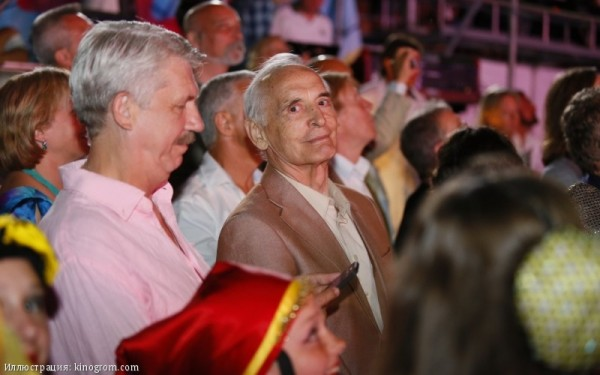
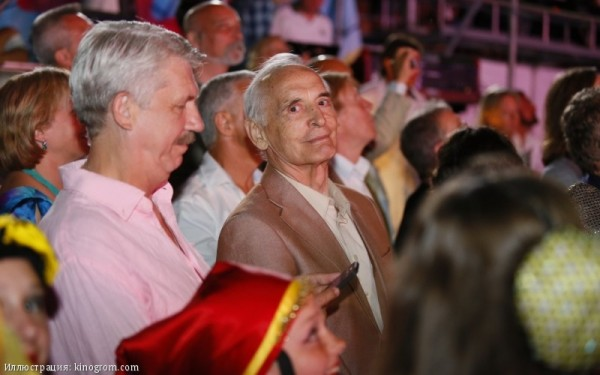

Ярославская область: проект «Муниципальная команда Губернатора» завершен!
 


Сформированная по итогам конкурсного отбора команда в составе 43 человек прошла обучение по специально разработанной программе профессиональной переподготовки «Эффективное управление территорией» и успешно защитила итоговые проекты.
В составе аттестационной комиссии:
Александр Русаков - ректор Ярославского государственного университета им.П.Г.Демидова (председатель); Сергей Головчанов - заместитель председателя Правления общества «Знание» России, руководитель регионального центра ЛИНК (заместитель председателя); Юрий Бойко - заместитель губернатора Ярославской области; Дмитрий Брюханов - кандидат экономических наук, доцент, и.о. заведующего кафедрой, начальник управления качества, лицензирования и аккредитации Ярославского государственного университета им. П.Г. Демидова; Владимир Демьянов – директор Департамента территориального развития Ярославской области; Надежда Клюева – доктор психологических наук, профессор, заведующая кафедрой Ярославского государственного университета им.П.Г.Демидова.
Программа формирует многочисленные компетенции руководителя, в числе которых - знание представленных в курсе концепций, моделей и техник управления; владение технологией решения управленческих проблем; умение организовать групповую и командную работу; владение навыками проектного мышления и практической разработки проектов муниципального развития.
Защита проектов состоялась 20-21 мая в Администрации Ярославской области. Все проекты успешно защищены, большая часть проектов получила отличную и хорошую оценку и рекомендацию к внедрению в регионе.
Заместитель губернатора Ярославской области Юрия Бойко: «Вчера и сегодня проходит защита дипломных работ выпускников первого набора нашей "школы сити-менеджеров" - финалистов проекта Муниципальная команда Губернатора. Работы очень интересные. Участники прошли большой путь длиною в год. Многому научились.
Скоро подведём итоги этого проекта в целом. Проект получился».Высокие результаты были бы невозможены без слаженной работы команды, работавшей над реализацией проекта.
Руководитель регионального центра ЛИНК Сергей Головчанов: «Поздравляю всех замечательных участников проекта с его успешным окончанием! Спасибо и благодарность за совместную работу всем - Юрию Бойко, Александру Русакову, Владимиру Демьянову, Сергею Щенникову, Анатолию Курицыну, Надежде Клюевой, Дмитрию Брюханову, Владимиру Алеврову, Галине Шихмаревой, Александру Воронцову, Евгению Соколову, Наталье Гордиенко, Павлу Штареву, Олегу Килипченко, Виктору Борзенкову (Москва), Вячеславу Бугрину (Москва), Елене Мильто, Марку Краюхину, Нине Ульяновой, Сергею Володину (Москва), Елене Батуевой, Виктору Сидневу (Москва), Виктору Башкирову (Жуковский), Владимиру Богомолову, Алексею Ерохину (Калуга), Елене Исаевой, Евгению Комракову (Жуковский), Николаю Нефедову (Жуковский), Александру Тарасенкову, Татьяне Баталовой (Калуга), Владимиру Фарутину (Калуга), ЛИНК, ЯрГУ и "Знание", всем замечательным слушателям и участникам. Команда была большой, и команда сработала эффективно!»
Слушатель программы Андрей Коврайский: «Друзья! В субботу прошла защита дипломных работ выпускников кадрового проекта Муниципальная команда Губернатора Ярославской области.
Приемную комиссию возглавлял ректор ЯрГУ им. П.Г. Демидова Александр Русаков. Обучение в рамках курса "Эффективное управление территорией", подготовленного преподавателями Международного института менеджмента ЛИНК, длилось с октября 2015 года. За это время состоялись многочисленные тьюториалы, были выполнены все контрольные, написаны эссе и подготовлен диплом на тему "Территория энергоэффективности. Модернизация уличного освещения в целях энергосбережения". Наша команда: Смирнова М.В., Наталия Косихина, Андрей Коврайский, Наталия Ашастина. К сожалению, за рамками выступления на защите остался блок социальных вопросов - опубличивание результатов модернизации, просветительская работа с населением (в том числе с учащимися) и др. Но это деятельность ждет впереди! Диплом мы защитили на ОТЛИЧНО! :) :) :)
Рад за коллег: Кузьмин Михаил, Юлия Кусакина, Ксения Ветеркова, Анна Бушманова, Лариса Жибарева, Сергей Груздев, Павел Крутов, Владимир Гончаров, Евгений Прокофьев, Ярослав Анушин, Леонид Чистяков, Михаил Борисовский, Дмитрий Юнусов, Александр Енин, Марина Степанова и благодарен тем людям, которые позволили принять участие в этом, безусловно полезном, обучении: Юрий Бойко, Владимир Демьянов, Елена Мильто, Сергей Головчанов, Нина Ульянова.
Будем работать.